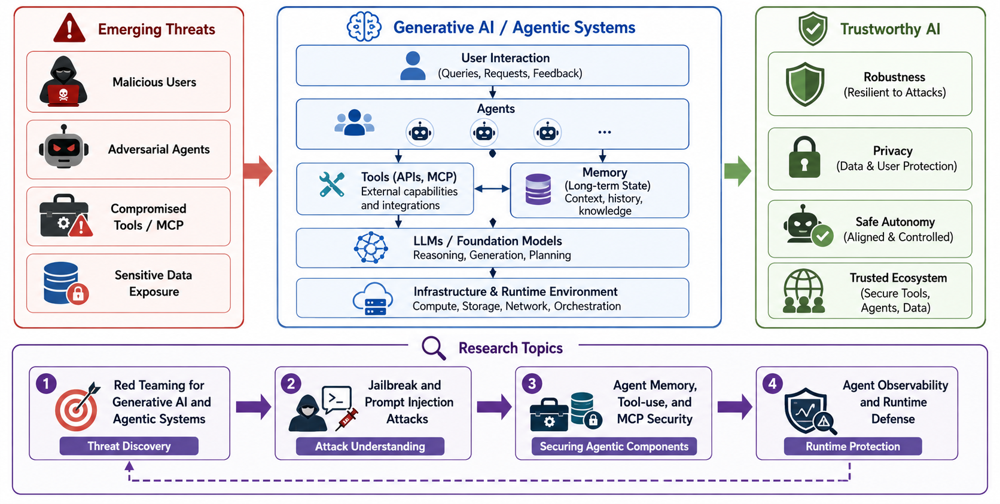

01
Generative AI Security & Privacy
Protecting increasingly autonomous AI systems across the full security lifecycle.

Research scope
The growing autonomy and interactivity of generative AI systems are reshaping their security and privacy threat landscape, particularly as large language models are embedded in agentic systems with persistent state, external tools, and the ability to act in dynamic environments.
We identify and mitigate emerging risks—from uncovering hidden threats through black-box adversarial attacks, to systematically characterizing security properties, and ultimately enabling continuous protection at runtime.
Research topics04 focus areas
- 01Red Teaming for Generative AI and Agentic Systems
- 02Jailbreak and Prompt Injection Attacks
- 03Agent Memory, Tool-use, and MCP Security
- 04Agent Observability and Runtime Defense